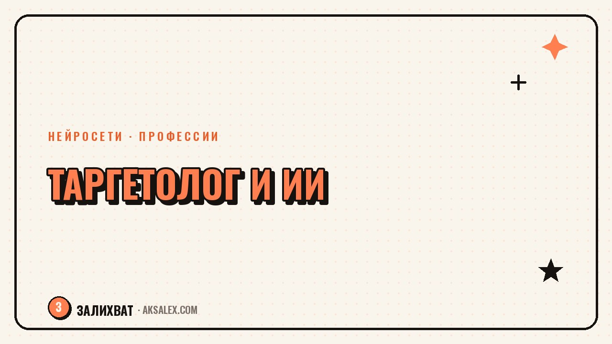

Нейросети для таргетолога: что реально помогает

У таргетолога почти никогда не бывает одной задачи. Пока крутится одна кампания, нужно писать тексты объявлений для второй, собирать креативы для третьей и готовить отчёт по четвёртой, которую клиент требует ещё вчера. Нейросети не заменят анализ целевой аудитории и чутьё на то, что сработает, но забирают у таргетолога часть рутины: черновики текстов, варианты баннеров, расшифровку цифр из рекламного кабинета в понятный клиенту язык. Разберём, где ИИ в этой профессии реально экономит время, а где от него больше вреда, чем пользы.
Где у таргетолога уходит больше всего часов
Если честно посчитать рабочую неделю, окажется, что на стратегию и анализ аудитории уходит меньше времени, чем на техническую рутину. Нужно написать десять вариантов текста объявления, собрать баннеры под три формата площадки, а потом ещё свести цифры в таблицу и объяснить клиенту простыми словами, почему стоимость заявки выросла.
Три точки, где теряются часы
- Генерация вариантов текста и заголовков под А/Б-тесты
- Подготовка визуала под разные форматы и площадки
- Перевод цифр из рекламного кабинета в отчёт, понятный не маркетологу
Именно эти три точки нейросети закрывают быстрее и охотнее всего. Стратегию, выбор аудитории и интерпретацию результатов с учётом бизнеса клиента ИИ не заменяет - там нужен человек, который знает контекст.
Нейросети для текстов объявлений и офферов
Текстовые нейросети вроде ChatGPT, Claude и ЯндексGPT хороши там, где нужно быстро размножить один удачный оффер в десять вариантов с разными акцентами: на цену, на скорость, на гарантию. Таргетологу не нужно писать каждый вариант с нуля - достаточно задать структуру оффера, аудиторию и ограничение по символам площадки.
Как ставить задачу нейросети
Результат сильно зависит от того, сколько контекста ты дал. Если написать голое 'придумай текст объявления', получишь нейросетевой штамп без пользы. Если указать боль аудитории, конкурентное преимущество продукта и площадку, где выйдет объявление - вариант будет пригоден к запуску сразу или после правки.
Нейросеть не знает, почему клиенты выбирают именно этот продукт. Она знает только то, что ты ей рассказал. Чем конкретнее бриф, тем меньше потом переписывать.
- Опиши продукт и его реальное отличие от конкурентов
- Укажи боль или желание аудитории, под которую пишешь оффер
- Задай площадку и лимит символов
- Попроси 5-8 вариантов с разными акцентами, а не один идеальный
Нейросети для креативов и баннеров
С визуалом ситуация честнее: нейросеть помогает собрать черновой вариант креатива или быстро протестировать несколько стилей, но финальный баннер почти всегда нужно доводить руками - менять шрифт, выравнивать логотип, подгонять под брендбук клиента. Зато вместо дизайнера на каждый мелкий тест можно подготовить черновики самому.
Сравнение инструментов для креативов
| Сервис | Для чего годится | Ограничение |
|---|---|---|
| Fusion Brain | Генерация изображений на русском языке, быстрые черновики | Нужна доводка под фирменный стиль |
| Canva Magic Studio | Готовые шаблоны баннеров под рекламные форматы | Платная подписка на полный доступ |
| Шедеврум | Быстрые идеи визуала и фона для баннера | Не держит точный текст на картинке |
| Midjourney | Фотореалистичные и стилизованные образы | Доступ через VPN и отдельную подписку |
Для рекламных площадок, где важен точный текст на баннере, надёжнее собирать картинку в нейросети, а текст и кнопку добавлять отдельно в редакторе - так меньше шанс получить кривые буквы или нечитаемый шрифт.
Аналитика и отчёты клиентам с помощью ИИ
Самая благодарная для нейросети задача - не считать цифры, а объяснять их. Таргетолог выгружает цифры из рекламного кабинета, а ИИ помогает собрать из них читаемый отчёт: что выросло, что упало, какая гипотеза сработала, а какую пора остановить.
Это особенно выручает, когда клиент далёк от маркетинга и воспринимает термины вроде CTR и CPL как незнакомый язык. Нейросеть может переписать те же цифры человеческими словами: 'из ста человек, увидевших объявление, заявку оставили трое, это чуть выше, чем в прошлом месяце'.
- Вставь цифры из кабинета в текстовую нейросеть и попроси выводы, а не пересказ таблицы
- Попроси сравнение с прошлым периодом в процентах, а не только в абсолютных числах
- Уточни, что отчёт читает не маркетолог, и попроси простой язык без жаргона
Где нейросеть подводит таргетолога
Главный риск - доверить нейросети цифры, которых она не видела. Если спросить у текстовой модели 'сколько в среднем стоит заявка в нише услуг красоты', она может выдать правдоподобное число, которое ничем не подтверждено. Такие цифры нельзя нести клиенту как факт.
Второй риск - креативы без привязки к реальному продукту. Нейросеть не знает, что у клиента нет доставки по выходным или что акция действует только три дня. Любой текст и баннер нужно проверять на соответствие реальным условиям перед запуском, иначе объявление уйдёт на модерацию с ошибкой или приведёт недовольных заявок.
Что проверять перед запуском всегда
- Соответствуют ли цифры и условия в тексте реальному предложению клиента
- Не нарушает ли текст правила площадки (заявления о гарантиях, превосходстве, здоровье)
- Читается ли текст на баннере на маленьком экране телефона
Как внедрить нейросети в рабочий процесс: по шагам
Не стоит сразу перестраивать всю работу под ИИ. Проще встроить нейросеть в одну задачу, проверить результат на реальной кампании и только потом расширять использование.
Порядок внедрения
- Шаг 1: выбери одну повторяющуюся задачу, например варианты текстов для А/Б-теста
- Шаг 2: напиши шаблон брифа для нейросети с продуктом, аудиторией и площадкой
- Шаг 3: запусти результат на небольшом бюджете и сравни с обычным результатом
- Шаг 4: если текст или креатив сработал не хуже, переноси шаблон на следующую задачу
- Шаг 5: раз в месяц пересматривай шаблоны брифов - площадки и алгоритмы меняются
Такой подход экономит время без риска получить провальную кампанию из-за слепого доверия нейросети. Через пару месяцев набор рабочих шаблонов брифов становится личной базой, которая экономит часы на каждом новом клиенте.
Частые вопросы
Какая нейросеть лучше для таргетолога?
Нет одной универсальной нейросети на все задачи. Для текстов объявлений удобны ChatGPT, Claude или ЯндексGPT, для креативов - Fusion Brain, Canva Magic Studio или Шедеврум. На практике таргетологи обычно используют связку из двух-трёх сервисов под разные задачи.
Может ли нейросеть полностью заменить таргетолога?
Нет, нейросеть не знает бизнес клиента, не выбирает стратегию и не отвечает за результат кампании. Она ускоряет рутинные части работы: черновики текстов, визуала и отчётов, но решения и ответственность остаются за специалистом.
Можно ли доверять цифрам, которые выдаёт нейросеть в отчёте?
Доверять можно только тем цифрам, которые ты сам выгрузил из рекламного кабинета и передал нейросети для оформления. Если модель сама придумывает статистику по нише или рынку без источника, такие цифры нельзя использовать в отчёте клиенту.
Нужно ли таргетологу уметь рисовать, чтобы работать с нейросетями-генераторами картинок?
Нет, рисовать не нужно, но важно разбираться в композиции и требованиях площадки к формату креатива. Нейросеть делает черновик, а финальную доводку - текст, логотип, пропорции - почти всегда приходится делать руками в редакторе.
С чего начать внедрение нейросетей в работу таргетолога?
Начни с одной задачи, которая повторяется чаще всего, например с вариантов текста для А/Б-теста. Собери шаблон брифа с продуктом и аудиторией, проверь результат на небольшом бюджете и только после этого переходи к следующей задаче.
Раз тема оказалась полезной, вот что почитать следующим. Разбираем, как собрать вовлекающий тест или квиз для блога с нейросетью - от идеи вопросов до готового формата.
Читать статью →а не вручную